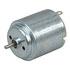
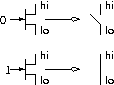
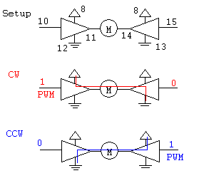

EENG 383
Small DC motor and driver
There are two main components that will be used in this lab,
the DC motor and the H-bridge. The goal of this lab will be
to create a circuit and firmware that can control the speed
of a DC motor using your PIC. Lets consider our two components
in order.
A DC motor is a 2 terminal device. When a voltage is applied
across the terminals of the motor the output drive shaft rotates.
If the voltage across the terminals is reversed then the output
drive shaft rotates in the opposite direction. DC motors are
a reversible system. That is, if you rotate the drive shaft then
a potential difference will appear across the terminals.
Schematically a motor is represented as a circle with the letter
M inside it. Below
is an image of the DC motor that we will be using in this lab.
The only notable exception is that our DC motors have pig tails
soldered onto them.

An H-bridge is a circuit which allows
a relatively low voltage/low power circuit (our PIC) to
control a relatively high voltage/high power device (our
DC motor). In order to do this the H-bridge must be built
around some sort of amplifier circuit. In many cases these
amplifiers are field effect transistors, FETs for short.
A FET has three terminals, called the base, emitter and
collector. To simplify matters, a FET is an electrically
controlled on/off switch. The switch setting is controlled
by the voltage on the base. The terminals of the switch
are the collector and emitter. The base controls whether
there is a short circuit or open circuit between these two
terminals. The figure below shows a hi voltage on the
collector and lo voltage on the emitter. The logic level
on the base opens and closes the switch as shown.

So how can you use FETs to build an H-bridge? Well it
takes four FETs to build an H-bridge, and you must arrange them
as shown in the left hand side of following figure.

Whats going on in this figure? Well there are three things that
could be happening depending on the values of the
A and
B
signals. Lets consider that would happen if
A=1 and
B=0.
Well the FETs corresponding to the
A
inputs would become wires. The FETs corresponding to the
B inputs would be open circuits. This
would then force current to flow through the motor in the
direction indicated by the blue arrow causing the motor to rotate.
Switching the polarity of the inputs to
A=0 and
B=1
would cause current to flow in the direction indicated by the
red arrow, causing the motor to spin in the opposite direction.
Finally, setting both
A=0 and
B=0
will cause all four FETs to behave as open circuits cause no
current to flow through the motor, turning it off.
The H-bridge you will be using in this lab
is the Texas Instruments SN754410 Quadruple Half
H Bridge Driver. The technical documents can be found on the
TI web site at the following link:
http://www.ti.com/lit/ds/symlink/sn754410.pdf.
There are a few points that are worth mentioning with
respect to this chip. First, the symbol typically used for
a FET is replaced in the
technical documents by a triangular buffer symbol. This
buffer behaves somewhat differently from the FET. When
enabled, the buffer magnifies the input. That is,
when enabled the buffer amplifies a logic 1 input to a
12v output and a logic 0 input to ground. When the buffer is
not enabled, its output is tristated. If you don't
remember, an output which is in the tristate configuration
is essentially an open circuit.
Second,
the buffers are separated into pairs. Each pair of buffers
has an enable line which allows the output to be tristated.
You will have to figure out how to use these tristate lines to
keep the sides of the H-bridge from stepping on each other toes.